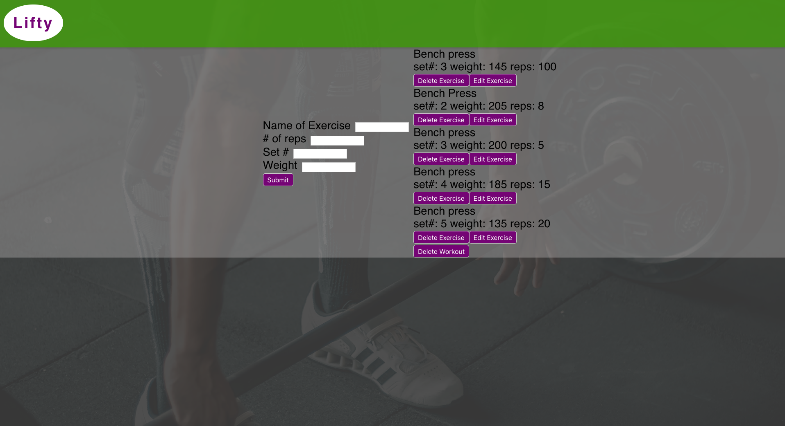

Lifty App
Once you create a new workout (or select a previous workout by date,) you will be taken to the workout page. On this page, you can create a new entry in the workout log. Make a mistake logging your exercises? No problem! Simply click the "Edit Exercise" button and make changes as needed. The user can also delete exercises (and even entire workouts) as needed.
This application was created using React, React Router, and deployed using Heroku. This application (along with a matching back end application) was created with the collaboration of myself and two other developers. Pair programming was also utilized in the creation of this application.